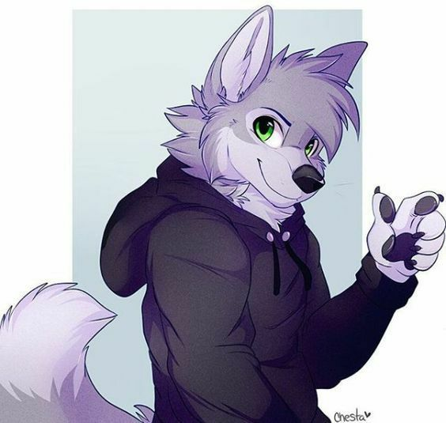

Hola soy Francisco!!🌈🌟
¡Hola! Soy Francisco y adoro todo lo kawaii. ¡Únete a mí para explorar este mundo lleno de ternura y diversión! 🌸

- Estudio Ghibli
- Estudio Disney
- Estudio Pixar
- Figuras de acción kawaii
- Ropa con estampados kawaii
- Accesorios kawaii
- Peluches de personajes masculinos kawaii